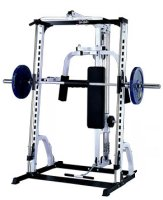
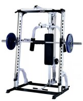

Body Systems
Body Systems LSM400 Linear Smith Machine
Overview
Linear Smith Machines are the ultimate in weight machines and the LSM400
leads the field. Designed for both serious fitness users and beginners, the
LSM400's vertical design provides all of the safety and control associated
with Smith Machines, while still allowing for the effective use of gravity
for effective resistance. You don't even need a workout partner. Lock points
can be set to prevent the bar from movement outside of your body's natural
range of motion.
You can tailor the LSM400 to meet you specific workout needs. Start with the
basic package of the Smith Machine rack and, as your needs grow, add a
lat/row, pec dec, plate tree, dip, and accessory organizer. Accessories are easy
to insert and remove, allowing you to continue your workout without delay.
The LSM400 works with all standard Olympic weight plates
The LSM400 is compact with all components place one side of the unit for easy
access. This makes the LSM400 perfect for people who want a quality home gym, but
do not have a lot of space. Place the LSM400 against a wall and you're ready
to go!
Features
Smooth Smith Action: The bar (rated at 800 lb. capacity) slides on Teflon bushings
alongside solid steel guide rods. Smooth motion is key to successful workouts,
as the target muscles are utilized to their full potential with each repetition.
Proper Angle: The bar travels along a 7 degree path from vertical. Studies have
shown that this is the proper lifting angle to increase your comfort and
prevent injury.
Safety: The LSM400 has 20 lock-out points for a safe, solid stop at
any point in your workout routine.
Rugged: Constructed with heavy 12 gauge steel and 7 gauge reinforcing plate. This is
a unit built to last.
Warranty: Every part of the LSM400 has a lifetime guarantee. We will replace
or repair anything that goes wrong.
Dimensions
Width: 85"
Height: 82"
Depth: 72"
Optional Attachments
Selectorized Lat/Row station (Part: MA831-4)
Pec Dec station (Part: MA218-6)
Dip station (Part: MA105-3)
Plate tree (Part: MA488-0)
Accessory organizer (MA212-1)
Workout DVD (MA051-1)
Workout poster (MA055-3)
Systems
401 Commercial Drive
Eaton, TX 87015
(800) 555-2811